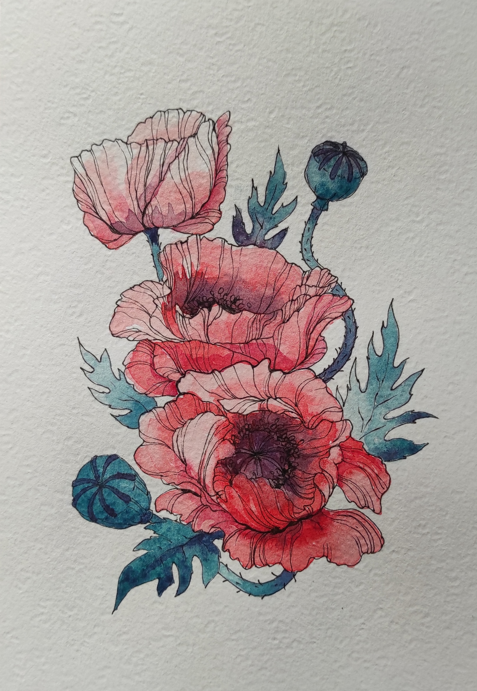

Рисование
- Я начала рисовать, когда был еще маленьким. Мама с папой очень часто дарили мне фломастеры самых разных цветов, цветные карандаши и красивую, белоснежную бумагу для рисования. Мне нравилось изображать на чистом листе что-нибудь красивое, растения, животных, иногда людей. Поэтому я нередко сам делала открытки для мамы и папы. Однако, первые мои рисунки были не самыми лучшими. Кое-что получалось криво, кое-что вообще не получалось. Но я всегда продолжала рисовать. Теперь, мне кажется, я рисую очень хорошо. Мои работы висят на стенах в моей комнате.
